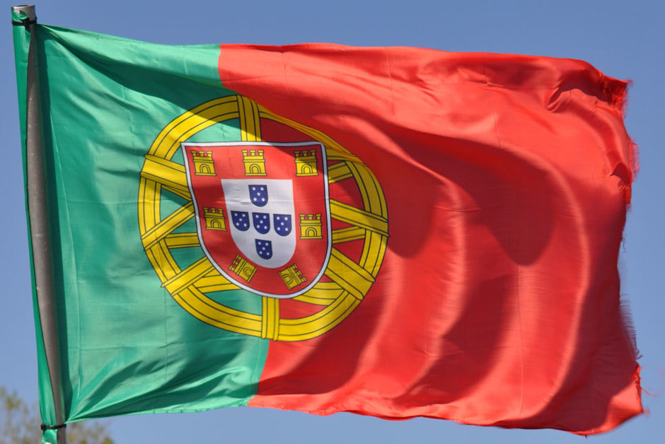

ПОРТУГАЛЬСКИЙ ЯЗЫК
- Португальский алфавит включает 26 букв, в том числе и буквы с диакритикой. Примечательно, что такие буквы как K, V и Y традиционному португальскому языку не свойственны, а потому используются они только в словах иностранного происхождения.
- Ежегодно, 5-го мая отмечается День португальского языка. Этот праздник существует во всех странах, где говорят на этом языке.
- В Бразилии находится Музей Португальского Языка. Расположен он в городе Сан Пауло. Особенностью этого музея является использование интерактивных панелей, которые позволяют в развлекательной форме получить полезную информацию о развитии языка.
- Жители муниципалитета Миранда-ду-Доуру (расположен на северо-востоке Португалии) говорят на уникальном мирандском языке или мирандес (lhéngua mirandesa). Он представляет собой одну из разновидностей архаичного португальского, который по лексике и фонетике максимально приближен к испанскому. На сегодняшний день число носителей этого языка составляет всего пару тысяч человек. Тем не менее, с 1999 года мирандес носит статус официального. Более того — на нем даже издаётся местная газета.